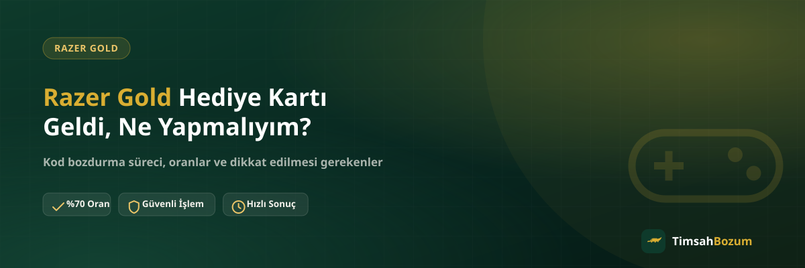

Birisi sana doğum günü, bayram veya özel bir gün hediyesi olarak Razer Gold kartı verdi, ama oyun mağazasında kullanacağın bir şeyin yok mu? Bu durumda elinde kalan kod boşa gitmek zorunda değil. Bu yazıda hediye kartı koduyla ilk yapman gerekenden kodu bozdurma sürecine kadar bilmen gereken her şeyi anlatıyoruz.
Razer Gold Hediye Kartında Kod Nasıl Bulunur?
Razer Gold hediye kartları genelde fiziksel bir kart üzerinde kazınmış koda sahiptir; kazı tabakasının altında harf ve rakamlardan oluşan bir dizi bulunur. Dijital olarak e-posta veya mesaj yoluyla aldığın kartlarda ise kod doğrudan metin içinde ya da bir görsel üzerinde yazılı olur. Her iki durumda da kodu hiçbir karakter atlamadan, büyük/küçük harf ayrımına dikkat ederek not etmen önemli. Kodun bir kısmını yanlış okuyup paylaşman işlemi geciktirir, çünkü kontrol sırasında geçersiz çıkar.
Hediye Kartı Kodunu Bozdurmak Güvenilir mi?
Hediye olarak gelen bir kodun bozdurulması, kendi satın aldığın bir kodun bozdurulmasından farklı bir süreç değil. Kodun kaynağı (satın alınmış, hediye edilmiş, bir çekilişten kazanılmış) işlemi etkilemez; önemli olan kodun geçerli ve kullanılmamış olması. WhatsApp üzerinden kodunu paylaştığında, oran teyit edilip onayladığın anda süreç ilerler. Üyelik, form ya da kimlik belgesi istenmediği için hediye kartı sahibi olman tek başına yeterli bir başlangıç noktası.
Kodu Kullanmadan Önce Nelere Bakmalısın?
Kodu paylaşmadan önce kartın üzerinde veya mesajında bir kullanım son tarihi olup olmadığını kontrol etmek faydalı olur. Ayrıca kazı tabakasının zarar görmediğinden, kodun eksiksiz okunabildiğinden emin ol. Eğer kart ikinci elden geldiyse (örneğin bir arkadaşından devralındıysa) kodun önceden kullanılıp kullanılmadığını bilemeyebilirsin; bu durumda kodu paylaşıp sonucu öğrenmek en pratik yol, çünkü kullanılmış bir kod için ödeme yapılamaz.
Hediye Kartı Kodu ile Normal Kod Arasında Fark Var mı?
Hayır, Razer Gold tarafında hediye kartı kodu ile online satın alınan dijital kod aynı mantıkla çalışır; ikisi de tek kullanımlık bir koddur ve Razer Gold bozdurma işleminde aynı şekilde değerlendirilir. Kod tabanlı bir hizmet olduğu için kodun tam değeri tek seferde bozdurulur, kısmi bozum yapılmaz. Yani 50 TL'lik bir hediye kartı kodun varsa, bu kodun tamamı için işlem yapılır, bir kısmını bozdurup kalanını saklama imkânı yok.
Kod Bozdurma Ne Kadar Sürer?
Süreç; kodu WhatsApp'tan paylaşman, kodun kontrol edilmesi, oranın teyit edilmesi ve onay sonrası ödemenin yapılmasından oluşuyor. Bu adımların her biri karşılıklı mesajlaşma hızına bağlı, net bir süre vermek yerine "bilgi eksiksiz paylaşıldığında işlem akıcı ilerler" demek daha doğru. Güncel süreyle ilgili en net bilgiyi WhatsApp'tan teyit edebilirsin.
Hediye Kartındaki Kod Kullanılmışsa Ne Olur?
Kontrol sırasında kodun daha önce kullanıldığı görülürse işlem bu noktada durur, çünkü kullanılmış bir kod için ödeme yapılamaz. Bu durum hediye kartlarında bazen kartı veren kişinin kodu yanlışlıkla daha önce denemiş olmasından, bazen de kartın üretim veya dağıtım sürecinde bir sorun yaşanmasından kaynaklanabilir. Kodun kullanılmış çıkması senin bir hatan olmak zorunda değil; böyle bir durumda kartı aldığın kaynaktan (mağaza, satıcı, hediye eden kişi) bilgi almak mantıklı bir adım olur.
Kampanyadan veya Çekilişten Çıkan Kod için Durum Farklı mı?
Bazen Razer Gold kodu doğrudan hediye olarak değil, bir çekiliş, kampanya veya ödül yoluyla da eline geçebilir. Bu kodlar da aynı Razer Gold alt yapısından üretildiği için bozdurma sürecinde herhangi bir farklılık oluşturmaz. Kodun bir kampanyadan çıkmış olması, kontrol sırasında "kampanya kodu" diye ayrı bir kategoriye girmez; tek kullanımlık, tek değerli bir kod olarak değerlendirilir. Dikkat etmen gereken tek nokta, kampanyayı düzenleyen firmanın koduyla ilgili ek bir kullanım şartı koyup koymadığını kontrol etmek; böyle bir şart WhatsApp üzerinden yürüttüğümüz bozdurma işlemini etkilemez, ama kampanyayı düzenleyen firmaya karşı olan yükümlülüğünü etkileyebilir.
Birden Fazla Hediye Kartın Varsa Ne Yapmalısın?
Farklı zamanlarda hediye edilmiş birden fazla Razer Gold kodun birikmiş olabilir. Bu durumda her kodu tek tek ayrı mesajlarla paylaşmak yerine hepsini bir seferde, aralarında net şekilde ayırarak göndermek süreci hızlandırır. Her kod ayrı ayrı değerlendirilip kendi tutarına göre işleme alınır; birden fazla kodu birleştirip tek bir bakiye gibi göstermek gerekmez, her biri kendi değeri üzerinden ayrı ayrı hesaplanır.
Hediye Kartını Hemen mi Bozdurmalısın?
Elinde kalan bir hediye kartı kodunu ne zaman bozduracağına tamamen sen karar verirsin, kodun bir son kullanma tarihi yoksa aceleye gerek yok. Ancak kodu uzun süre saklamak yerine, ihtiyacın yoksa değerlendirmek mantıklı olabilir; çünkü kartın fiziksel olarak kaybolması, kazı tabakasının silinmesi veya dijital mesajın kaybolması gibi durumlarda kodu elinde tutman güçleşebilir. Kodu not aldıktan sonra güvenli bir yerde saklamak, bozdurma kararını verene kadar riski azaltır.
Hediye kartındaki kodunu değerlendirmek istediğinde, WhatsApp hattımıza yazarak süreci başlatabilirsin. Kod bilgini paylaşman, oranı teyit etmen ve onay vermen yeterli; üyelik veya ek bir belge istenmez.
İlgili Yazılar
- Razer Gold Kodu Nasıl Bozdurulur? Adım Adım Rehber
- Razer Gold Kodu Kullanılmışsa Ne Olur?
- Razer Gold Kodu Bölgeye Özel mi? Bilmen Gerekenler
Sık sorulan sorular
Hediye kartı koduyla ilgili sorun ne olursa olsun, en doğru ve güncel bilgiyi almak için kodunu paylaşmadan önce WhatsApp'tan bize yazman en pratik çözüm.